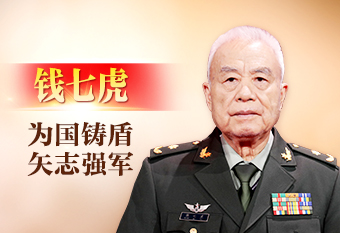

欢迎访问高校红色课堂！
设为首页
丨
加入收藏
中文版
英文版
中文版
启思明德，筑梦中华!
首页
思想理论研究
重要会议
榜样,你好！
指示批示
青春驿站
答题专栏
意见反馈
您的当前位置：
首页
>
榜样，你好！
榜样，你好
榜样，你好！

钱七虎：为国铸盾 矢志强军
始终坚守初心、许党报国。参加工作以来，钱七虎始终坚守爱党、报国、强军的赤子情怀，六十年如一日，牢记初心、紧盯战场、思谋打赢，把个人理想与党和国家的需要、民族的前途命运紧密联系在一起
+详情
李桂科：治病治心治贫 让村民更幸福
精心治愈麻风患者，诠释医者仁心。1981年4月，24岁的李桂科第一次走进住着181名麻风病患者、几乎与世隔绝的洱源县山石屏疗养院，看到简陋的垛木房、脏乱不堪的生存环境
+详情
吴惠芳：带领乡亲绘就“农村现代画”
从军官到村官，初心不改，乡村振兴路上再立新功。2005年9月，时任解放军驻杭州某师政治部主任的吴惠芳，放弃大城市优越的生活条件，选择自主择业回到家乡永联村
+详情
友情链接
新华网
人民网
中央党校
关于我们
联系我们
答题系统
新时代纪实
反馈问卷
高校红色课堂 All Rights Reserved ICP备案号：黑ICP备字123456号
©2022-2025 高校红色课堂
Copyright©高校红色课堂版权所有 All Rights Reserved